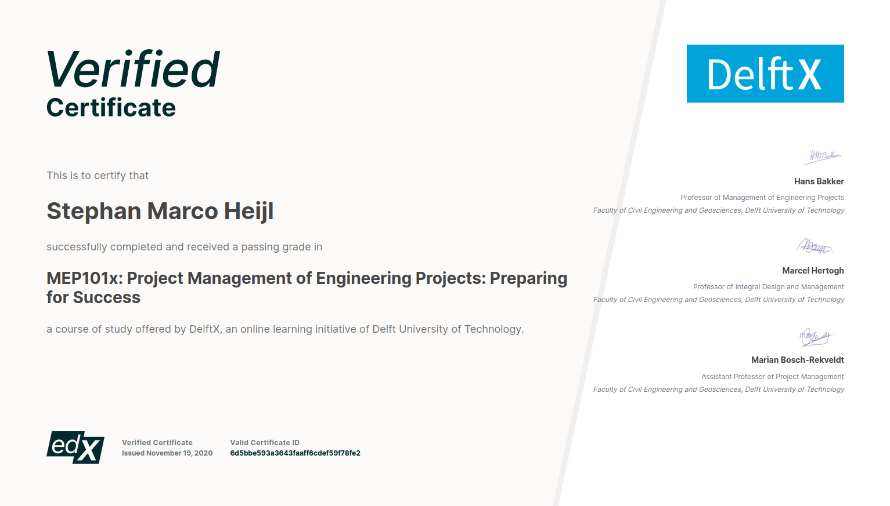

DelftX
As part of my personal development I choose to partake in courses offered by DelftX at EdX, an online learning platform. I have kept a record of my certificates here.
As part of my personal development I choose to partake in courses offered by DelftX at EdX, an online learning platform. I have kept a record of my certificates here.
Working to develop myself professionaly also extends to my free time. I have participated in a number of courses to extend my capabilities.
In order to develop my project management skills I enrolled in the DelftX Project management of Engineering projects program. This has culminated in two additional professional certificates in Engineering Project Management: Project Finance Management and Mastering project complexity.

In this course I worked together with a team of eight engineers to create a Project Execution Proposal for a solar energy park. This course helped us identify complexities, determine stakeholders and the best ways to deal with them. I finished this course with a grade of 86%.
This course delved further into the issues of complexity in projects. It allowed me to explore different type of complexity and proper management styles for dealing with and mitigating them. I finished this course with a grade of 91%.
This additional course gave me insights into the workings of project finance, which gave me a new appreciation for the scale of large public works and the intricacies of establishing a solid financial fundament for a project. I finished this course with a grade of 90%.

In order to be better prepared for a career with decisionmaking responsibility, I elected to enroll in the Leadership for Engineers track at DelftX, an initiative by the Technische Universiteit Delft. While the courses do not offer actual leadership experience, they do offer a theoretical framework that will help me become more effective as a leader. All certificates in the program were achieved with 90%+ scores.

This course helped me discover analytical methods that aid in encounters with complex business decisions.
This course helped me form a framework for cooperation in networks and provided techniques for enhancing my communication skills targeted at achieving business goals.
The final course on this professional certificate track helped me find ways to enhance the way in communicate in speech and in writing, in order to improve collaboration and understanding.


I followed this course to learn more about working with machine learning in for larger datasets. This course helped me in understanding Spark and deploying machine learning algorithms across large compute infrastructures.